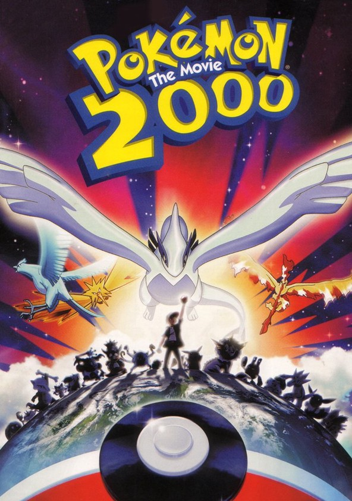

Pokémon:The First Movie
Released in : 1998

About it : Ash, Misty, Brock, and several other Pokémon trainers travel to an island, under the pretense that they will be battling a superior Pokémon trainer, only to discover the genetically engineered Pokémon Mewtwo, created by a scientist for Giovanni of Team Rocket, is there and is planning to take over the world with other cloned Pokémon.
Movie LinkPokémon The Movie 2000
Released in : 1999
About it : Ash, Misty, and Tracey visit Shamouti Island where Ash is roped into a festival honoring Articuno, Zapdos, and Moltres, all of whom are being captured by Lawrence III, a Pokémon Collector who also wants to capture the legendary Pokémon Lugia.
Movie LinkPokémon 3 The Movie
Released in : 2000

About it : Ash, Misty, and Brock try to retrieve Ash's mother from Molly Hale, a lonely little girl whose father has disappeared and is being taken care of by the Pokémon Unown who have created an illusion of the Legendary Pokémon Entei.
Movie LinkPokémon Movie 4ever
Released in : 2001

About it : Ash, Misty, and Brock meet up with Sammy, a boy from 40 years in the past, and the Mythical Pokémon Celebi, who is being hunted down by the evil Iron-Masked Marauder of Team Rocket.
Movie LinkPokémon Heros The Movie
Released in : 2002
About it : Ash, Misty, and Brock's trip to the city of Alto Mare is interrupted when two thieves called Annie and Oakley try to steal the Soul Dew, a crystal that holds the essence of the Legendary Pokémon Latios and Latias, which is also required to keep the city safe.
Movie LinkPokémon Jirachi - Wish Maker
Released in : 2003

About it : Ash, May, Max, and Brock meet the Mythical Pokémon Jirachi, who wakes up one week every thousand years to grant a wish, and must save it from former Team Magma member Butler
Movie LinkPokémon Destiny Deoxys
Released in : 2004

About it : Ash, May, Max, and Brock visit a city, only to find it under attack from the extraterrestrial Pokémon Deoxys and the Legendary Pokémon Rayquaza, all centered around a young boy named Tori.
Movie LinkPokémon: Lucario and the Mystrey of Mew
Released in : 2005

About it : Ash, May, Max, and Brock help an ancient Lucario discover the events that led up to his abandonment by a man revered as a hero while saving Pikachu, Meowth, and the Mythical Pokémon Mew from the dying Tree of World's Beginning.
Movie LinkPokémon Ranger and the Temple of Sea
Released in : 2006

About it : A Pokémon Ranger entrusts May with the egg of the Mythical Pokémon Manaphy and with Ash, Brock, and Max keep him safe from the evil pirate Phantom to ensure that Manaphy's homeland is not destroyed.
Movie LinkPokémon: The Rise of Darkrai
Released in : 2007

About it : Ash, Dawn, and Brock must figure out a way to save Alamos Town from the space and time warping powers of the two Legendary Pokémon Dialga and Palkia, and clear the name of a Darkrai whose foreboding nature has led the townspeople to believe it is involved in the destruction of the town.
Movie LinkPokémon: Giratina and the Sky Warrior
Released in : 2008

About it : Ash, Dawn, and Brock help the Mythical Pokémon Shaymin return to the Gracidea Flower garden to participate in a flower bearing ceremony, all while Giratina and Dialga battle in the Pokémon world and in Giratina's Reverse World realm.
Movie LinkPokémon: Arceus and the Jewel of Life
Released in : 2009

About it : Ash, Dawn, and Brock travel to Michina Town, where they discover the Mythical Pokémon Arceus is upset over the town betraying it years ago. When Dialga, Palkia, and Giratina cannot hold it back, the heroes are sent back in time to change the past and present.
Movie LinkPokémon: Zoroark: Master of Illusions
Released in : 2010

About it : Ash, Dawn, and Brock arrive in Crown City for the Pokémon Baccer World Cup, but instead discover that a Zoroark under the control of a villain is causing havoc disguised as the Legendary Pokémon Entei, Raikou and Suicune. Zoroark's child Zorua asks for their help to save his mother from the evil Kodai and his Shuppet who seeks out Celebi and its ability to travel through time.
Movie LinkPokémon the Movie White: Victini and Zekrom
Released in : 2011

About it : Ash, Iris, and Cilan travel to Eindoak Town to participate in a tournament, meeting the Mythical Pokémon Victini on the way. However, they instead discover they must stop Damon, a descendant of Eindoak's ancient People of the Vale, from using the Legendary Pokémon Zekrom or Reshiram to use the Dragon Force to restore the former glory of the Kingdom of Vale, only to realize it is out of control and could destroy the world.
Pokémon the Movie Black: Victini and Reshiram
Released in : 2011

About it : Ash, Iris, and Cilan travel to Eindoak Town to participate in a tournament, meeting the Mythical Pokémon Victini on the way. However, they instead discover they must stop Damon, a descendant of Eindoak's ancient People of the Vale, from using the Legendary Pokémon Zekrom or Reshiram to use the Dragon Force to restore the former glory of the Kingdom of Vale, only to realize it is out of control and could destroy the world.
Movie LinkPokémon the Movie: Kyurem vs. Sword of Justice
Released in : 2012

About it : Ash, Iris, and Cilan help the Mythical Pokémon Keldeo escape from the Legendary Pokémon Kyurem, who seeks to battle it after freezing its compatriates the Sacred Swordsmen Cobalion, Terrakion, and Virizion.
Movie LinkPokémon the Movie: Genesect and the Legend Awakened
Released in : 2013

About it : Ash, Iris, and Cilan visit New Tork City to enjoy its Pokémon Hills park, only to come under attack from a group of Genesect angry over losing their home. Ash, Iris, and Cilan are saved by Mewtwo, who wants to help the Genesect but also prevent them from destroying the city.
Movie LinkPokémon the Movie: Diancie and the Cocoon of Destruction
Released in : 2014

About it : When the Mythical Pokémon Diancie cannot figure out how to make a new Heart Diamond to save her kingdom of Carbink subjects, she seeks out the Legendary Life Pokémon Xerneas for help, meeting Ash, Serena, Clemont, and Bonnie on the way, as they help her escape a group of jewel thieves and the unintentional awakening of the Legendary Destruction Pokémon Yveltal.
Movie LinkPokémon the Movie: Hoopa and the Clash of Ages
Released in : 2015

About it : When Ash, Pikachu, and their friends visit a desert city by the sea, they meet the Mythical Pokémon Hoopa, who has the ability to summon things—including people and Pokémon—through its magic rings. After a scary incident, they learn a story about a brave hero who stopped the rampage of a terrifying Pokémon long ago. Now, the threat that has been bottled up for years is in danger of breaking loose again! Can Ash help his new friend overcome the darkness within...or will a dangerous secret erupt into a clash of legends?
Movie LinkPokémon the Movie: Volcanion and the Mechanical Marvel
Released in : 2016

About it : Ash and his friends encounter the Mythical Pokémon Volcanion after a blast of steam from the sky, and Ash becomes bonded to it by an unknown force. Volcanion, who hates humans, is forced to bring Ash along as it heads to the Azoth Kingdom. Volcanion is in pursuit of the artificial Mythical Pokémon Magearna, hoping to rescue it from a corrupt minister who has stolen it with the intent of using Magearna's mysterious power to conquer the kingdom of machinery. Ash and Volcanion are forced to work together to rescue Magearna.
Movie LinkPokémon Movie: I Choose You
Released in : 2017

About it : Ash Ketchum from Pallet Town is 10 years old today. This means he is now old enough to become a Pokémon Trainer. Ash dreams big about the adventures he will experience after receiving his first Pokémon from Professor Oak.
Movie LinkPokémon The Movie: The Power Of US
Released in : 2018

About it : A young athlete whose running days might be behind her, a compulsive liar, a shy researcher, a bitter old woman, and a little girl with a big secret—the only thing they have in common is the annual Wind Festival in Fula City. The festival celebrates the Legendary Pokémon Lugia, who brings the wind that powers this seaside city. When a series of threats endangers not just the festival, but all the people and Pokémon of Fula City, it'll take more than just Ash and Pikachu to save the day! Can everyone put aside their differences and work together—or will it all end in destruction?
Movie Link